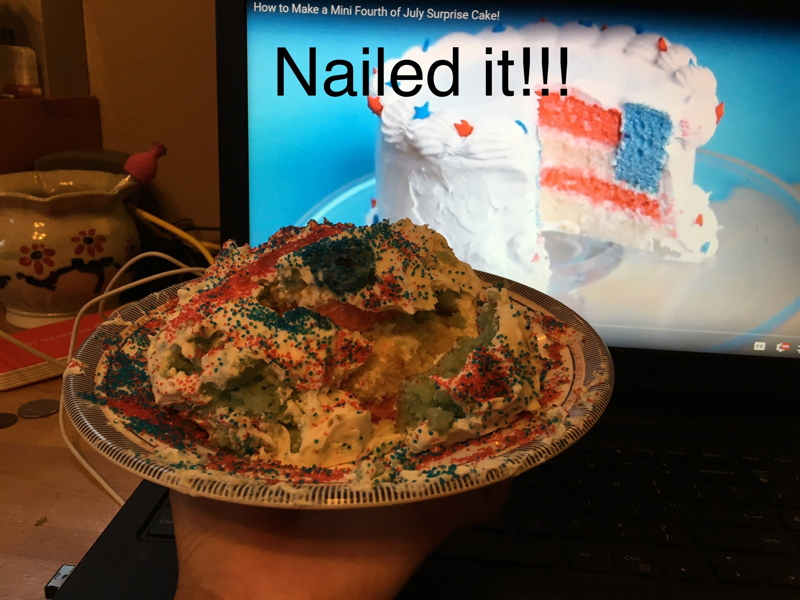
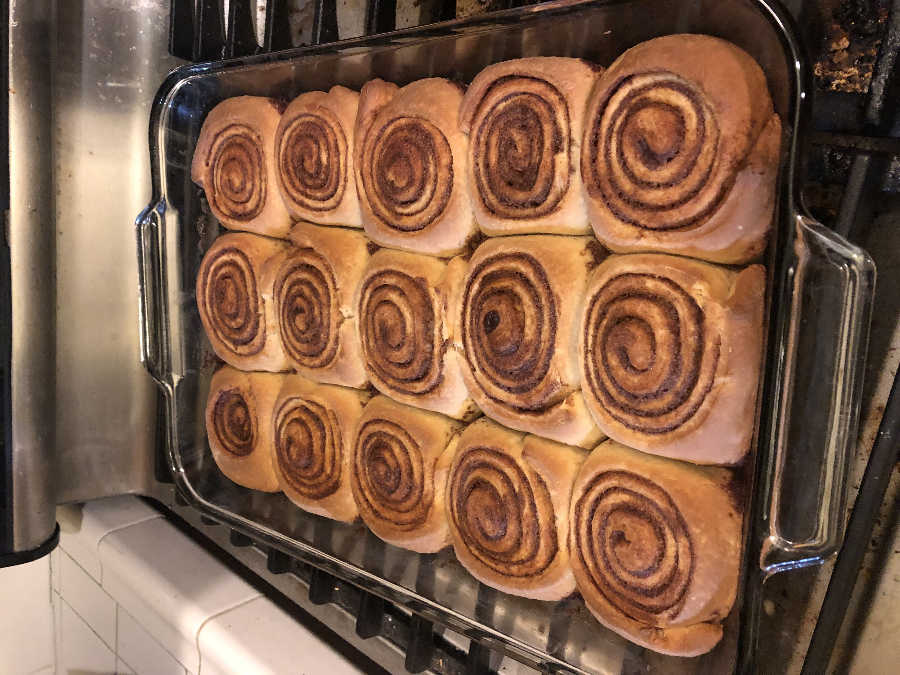
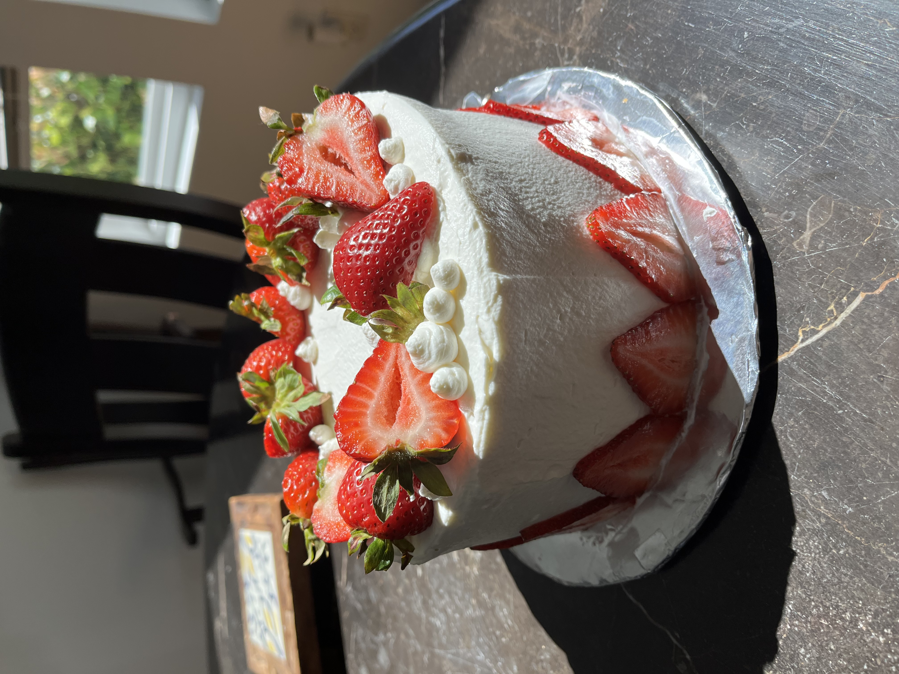

The picture below shows one of my first cakes with one of my friends. For some context behind the cake, my best friend and I watched a youtube video, back in 2016, of a really cool fourth of july cake with layers on the inside. So we decided to try and make it. It was supposed to look like the youtube video, but our cake ended up like this. It started a tradition we call "Fourth of July Fail Cake", and every year on the fourth of july, we make a cake.
Here are some of my more recent works:
 | Dish Name | Ingredients Needed | Recipe Link |
|---|---|---|
| Bua's Chicken | Chicken thigh, soy sauce, sugar, green onions, chinese cooking wine, water | N/A |
| Dad's tofu | Tofu, soy sauce, sesame oil, sugar, green onions, and ponzu | N/A |
| Tuscan Chicken Pasta | Chicken breast, garlic, onion, tomato, garlic, parmesan, and heavy cream | Tuscan Pasta Recipe |